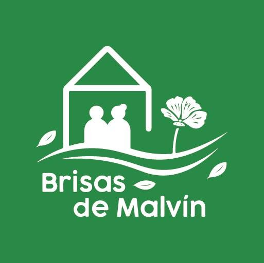
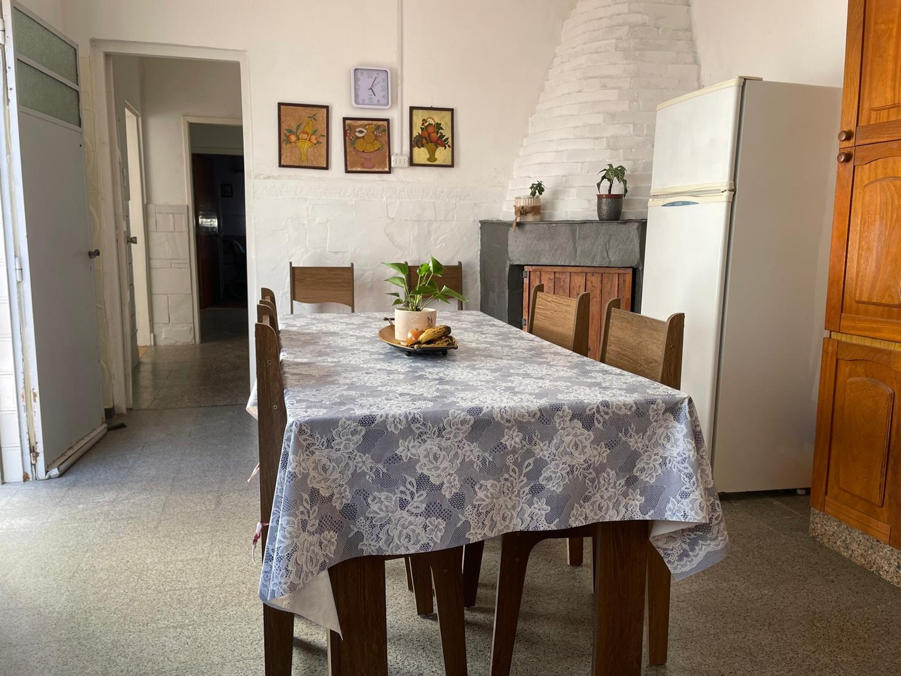

Atención y seguimiento
Atención médica diaria, enfermería en todos los turnos y apoyo en los cuidados cotidianos.

CUIDADO CON SENTIDO HUMANO
Distintas formas de acompañar, según las necesidades de cada residente y su familia.

CUIDADO CON SENTIDO HUMANO
Un equipo que acompaña las necesidades de cada residente, día a día.
Atención médica diaria, enfermería en todos los turnos y apoyo en los cuidados cotidianos.
Menús supervisados por nutricionista y elaborados por un chef titulado, según las necesidades de cada persona.
Estimulación cognitiva, música, lectura y propuestas recreativas que invitan a participar y conectar.
Gimnasia adaptada, fisioterapia y actividades de estimulación motora, de acuerdo con cada necesidad.
CADA FAMILIA, UNA NECESIDAD
Un hogar y acompañamiento permanente.
Cuidados durante un período determinado.
Seguimiento médico y fisioterapia.
Actividades y compañía, regresando a casa al finalizar la jornada.
ACOMPAÑAMOS LA DECISIÓN
Te orientamos sobre las modalidades de estadía y los cuidados disponibles.
La propuesta se conversa de forma personal, considerando las necesidades de atención y la disponibilidad del residencial.
Quiero consultar